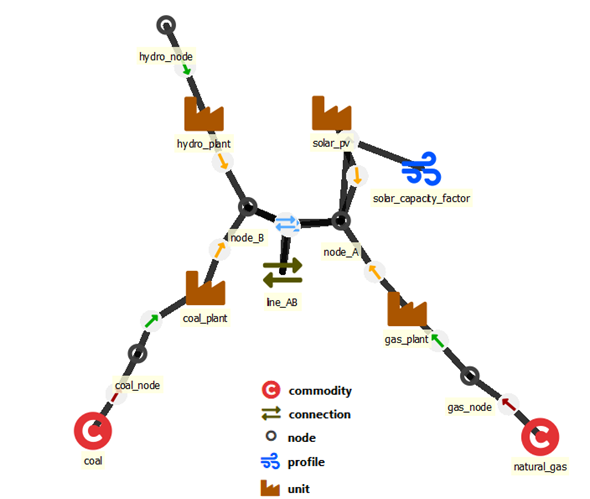
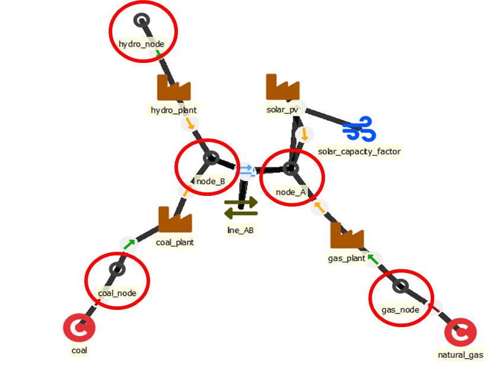
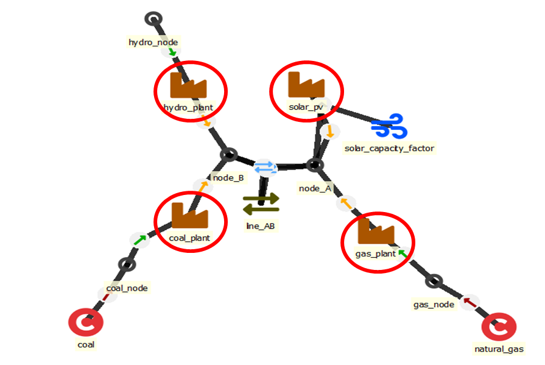
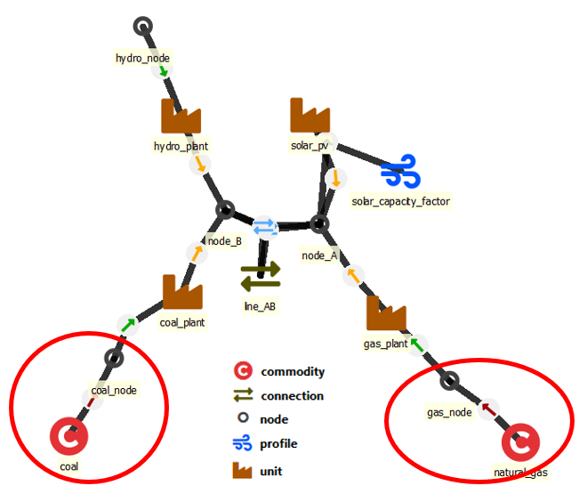

Main entities to define a power/energy system
Elemental entities (one dimensional):
node: maintain a balance between generation, consumption, transfers and storage state changes (nodes can also represent storages)unit: power plants or other conversion devices that take one or more inputs and turn them into one or more outputsconnection: transmission lines or other transfer connections between nodescommodity: fuels or other commodities that are either purchased or sold at a price outside of the model scopeprofile: timeseries that can be used to constraint the behaviour of units, connections or storagesreserve: reserve categories to withhold capacity to cope with issues outside of model scope
Entities with two or more dimensions:
unit__inputNodeandunit__outputNode: defines the inputs, outputs and their properties for the conversion unitsconnection__node__node: defines which nodes a connection will connectunit__node__profileandconnection__profile: defines a profile limit (upper, lower or fixed) for an energy flownode__profile: defines a profile limit (upper, lower, or fixed) for the storage state of the nodecommodity__node: defines if a node is a source or sink for a commodityreserve__upDown__unit__nodeandreserve__upDown__connection__node: reserve capacity from a source to the target node
See below for more detailed explanations.

How to define the temporal properties of the model
Timesteps and periods
FlexTool has two different kinds of time varying parameters. The first one represents a regular timeline based on timesteps. The duration of each timestep can be defined by the user. There can be multiple timelines in the database - the user needs to define which timeline to use (and what parts of the timeline should be used, as will be explained later). The timestep names in the timeline are defined by the user - they can be abstract like 't0001' or follow a datetime format of choice. However, the timestep names between different timelines must remain unique (usually there should be only one timeline in a database and therefore no issues).
The second time varying dimension is period, which is typically used to depict assumptions about the future. One model can include multiple solves that the model will solve in sequence (to allow multi-stage modelling). Each solve can include multiple periods (so that the user can change parameter values for different parts of the future).
A parameter of particular type can be either constant/time-varying or constant/period-based. For example inflow is either a constant or time-varying, but it cannot be period-based.
Timeblocksets
Timeblocks pick one or more sections from the timeline to form a timeblockset. Each timeblock defines a start and a duration. The aim of timeblocksets is to allow the modeller to create models with representative periods often used in the investment planning.
Definitions
-
model: model defines the sequence of solves to be performed (e.g. first an investment solve and then a dispatch solve) -
solves: sequence of solves in the model represented with an array of solve names.
- discount_offset_investment: [years] Offset from the period (often year) start to the first payment of the investment cost annuity.
-
discount_offset_operations: [years] Offset from the period (often year) start to the payment of operational costs.
-
solve: each solve is built from an array of periods (e.g. one period for 2025 and another for 2030). Periods use timeblocksets to connect with a timeline. -
period_timeblockset: map of periods with associated timeblocks that will be included in the solve. Index: period name, value: timeblockSet name.
- realized_periods: these are the periods the model will 'realize' - i.e., what periods will be reported in the results from this solve
- realized_invest_periods Array of the periods that will realize the investment decisions. If this is not defined when the invest_periods exist, the realized_periods are used to realize the invests as well
- invest_periods: array of periods where investements are allowed in this solve (applies only to objects that can be invested in)
- years_represented: Map to indicate how many years the period represents before the next period in the solve. Used for discounting. Can be below one (multiple periods in one year). Index: period, value: years.
- solver: choice of a solver ('highs'(default), 'glpsol', 'cplex' (requires a licence))
- highs_method: HiGHS solver method ('simplex' or 'ipm' which is interior point method). Should use 'choose' for MIP models, since 'simplex' and 'ipm' will not work.
- highs_parallel: HiGHS parallelises single solves or not ('on' or 'off'). It can be better to turn HiGHS parallel off when executing multiple scnearios in parallel.
- highs_presolve: HiGHS uses presolve ('on') or not ('off'). Can have a large impact on solution time when solves are large.
- solve_mode: a single solve or a set of rolling optimisation windows solved in a sequence
-
Rolling window parameters:
- rolling_solve_jump: Hours, (Required if rolling_window solve). Interval between the start points of the rolls. Also the output interval. This should be smaller than the horizon
- rolling_solve_horizon: Hours, (Required if rolling_window solve). The length of the horizon of the roll. How long into the future the roll sees. For an individual roll, horizon is the solve length and jump is the output length.
- rolling_duration: Hours, (Optional). Duration of rolling, if not stated, assumed to be the whole timeline of the solve
-
Nested solve sequence parameters:
- contains_solve: Array of solves that are run with after this solve using the realized data of this solve. Read 'How to use Nested Rolling window solves (investments and long term storage)'
- fix_storage_periods: Array of periods where the last storage value of the long term storage node is passed to the contained solve as a target. (Defined using the node parameter
storage_nested_fix_method)
-
For commercial solvers:
- solver_precommand the commandline text in front of the call for the commercial (CPLEX) solver. For a possibility of reserving a floating licence for the duration of the solve
- solver_arguments Array of additional commands passed to the commercial solver. Made for setting optimization parameters.
-
timeblockset: timeblocksets are sets of timeblocks with a start (from timeline) and a duration (number of time steps) -
block_duration a map with index timestep_name that starts the timeblock and value that defines the duration of the block (how many timesteps)
-
new_stepduration: Hours. Creates a new
timelinefrom the old for thistimeblockSetwith this timestep duration. The new timeline will sum or average the other timeseries data likeprofileandinflowfor the new timesteps. -
timeline: continuous timeline with a user-defined duration for each timestep. Timelines are used by time series data. -
timestep_duration: a map with timestep_name as an index and duration as a value.
-
timeline_duration_in_years Total duration of the timeline in years. Used to relate operational part of the model with the annualized part of the model.
-
timeblockset__timeline: defines which timeline object particular timeblockset is using.
Nodes
Defining how the node functions
These parameters will define how the node will behave and use the data it is given (available choices are marked in italics):
name- unique name identifier (case sensitive)is_active- is the model/node/unit active in a specific scenario: yes (if not defined, then not active)has_balance- does the node maintain a balance for inputs and outputs: yes (if not defined, then balance is not maintained)has_storage- does the node represent a storage and therefore have a state: yes (if not defined, then no storage)invest_method- Choice of investment method: either not_allowed or then a combination of- invest and/or retire
- investment limits for each period and/or for all periods (total) or no_limit
inflow_method- choice how to treat inflow time series- use_original - does not scale the original time series (no value defaults here)
- no_inflow - ignores any inserted inflow time series
- scale_to_annual_flow - will scale the time series to match the
annual_flowso that the sum of inflow is multiplied by 8760/hours_in_solve - scale_in_proprotion - calculates a scaling factor by dividing
annual_flowwith the sum of time series inflow (after it has been annualized usingtimeline_duration_in_years) - scale_to_annual_and_peak_flow - scales the time series to match the 'annual_flow' target while transforming the time series to match the highest load with the 'peak_inflow'

Data for nodes
Input data is set with the following parameters:
inflow- [MWh] Inflow into the node (negative is outflow). Constant or time series.annual_flow- [MWh] Annual flow in energy units (always positive, the sign of inflow defines in/out). Constant or period.existing- [MWh] Existing storage capacity (requireshas_storage). Constant.invest_cost- [CUR/kWh] Investment cost for new storage capacity. Constant or period.salvage_value- [CUR/kWh] Salvage value of the storage. Constant or period.lifetime- [years] Life time of the storage unit represented by the node. Constant or period.interest_rate- [unitless, e.g. 0.05 means 5%] Interest rate for investments. Constant or period.invest_max_total- [MWh] Maximum storage investment over all solves. Constant.invest_max_period- [MWh] Maximum storage investment for each period. Period.invest_min_total- [MWh] Minimum storage investment over all solves. Constant.invest_min_period- [MWh] Minimum storage investment for each period. Period.invest_forced- [MWh] Storage capacity that must be invested in a given period. Investment cost will be included in the cost results even though the model does not have an investment variable. Constant or period.fixed_cost- [CUR/kWh] Annual fixed cost for storage. Constant or period.penalty_up- [CUR/MWh] Penalty cost for decreasing consumption in the node with a slack variable. Constant or time. Default value is 10 000, but this can be changed from the database.penalty_down- [CUR/MWh] Penalty cost for increasing consumption in the node with a slack variable. Constant or time. Default value is 10 000, but this can be changed from the database.virtual_unitsize- [MWh] Size of a single storage unit - used for integer investments (lumped investments). If not given, assumed from the existing storage capacity.self_discharge_loss- [e.g. 0.01 means 1% every hour] Loss of stored energy over time. Constant or time.availablity- [e.g. 0.9 means 90%] Fraction of capacity available for storage. Constant or time.
Using nodes as storages
FlexTool manages storages through nodes. A regular node maintains an energy/material balance between all inputs and outputs (has_balance set to yes). A storage node includes an additional state variable, which means that the node can also use charging and discharging of the storage while maintaining the energy balance. A storage node is created by setting has_storage to yes and by adding storage capacity using the existing parameter and/or by letting the model invest in storage capacity (invest_method, invest_cost, invest_max_period, invest_max_total and invest_forced parameters).
Since FlexTool allows different temporal structures (multi-periods, rolling optimization, etc.) there needs to be ways to define how the storages behave when the model timeline is not fully consequtive. By default, storages are forced to match start level to the end level within timeblocks. This is an acceptable setting for small storages that do not carry meaningful amounts of energy between longer time periods in the model.
There are three methods associated with storage start and end values: storage_binding_method, storage_start_end_method and storage_solve_horizon_method.
- The most simple one of these is the
storage_start_end_methodand it overrides the other methods, since it forces the start and/or the end state of the storage to a predefined value based on the proportional parametersstorage_state_startandstorage_state_end(proportional means that the parameter needs to be set between 0-1 and will be scaled by the storage capacity in the model). These two parameters affect only the first and the last timesteps of the entire model (even when the model has more than one solve). storage_binding_methodstates how the storage should behave over discontinuities in the model timeline. Model timeline can have jumps for three different reasons: timeblocks, periods, and solves. Ifstorage_binding_methodis bind_within_timeblock, then the storage has to match the state of the storage between the beginning and the end of each timeblock. In effect, storage_state_at_start_of_timeblock equals storage_state_at_end_of_timeblock plus charging minus discharging minus self_discharge_loss at the last timestep. Similarly, bind_within_period will force the start and end between periods, but it will treat the jumps between timeblocks as continuous from the storage perspective (the storage will continue from where it was at the end of the previous timeblock). bind_within_solve does effectively the same when there are multiple periods within one solve. bind_within_model (NOT IMPLEMENTED 19.3.2023) will extend the continuity to multiple solves and force the end state of the storage at the end of the last solve to match the beginning state of the storage at the start of the first solve. Finally, bind_forward_only will force continuity in the storage state over the whole model without forcing the end state to match the beginning state.storage_solve_horizon_methodis meant for models that roll forward between solves and have an overlapping temporal window between those solves (e.g. a model with 36 hour horizon rolls forward 24 hours at each solve - those 12 last hours will be overwritten by the next solve). In these cases, the end state of the storage will be replaced by the next solve, but it can be valuable to have some guidance for the end level of storage, since it will affect storage behaviour. There are three methods: free is the default and will simply let the model choose where the storage state ends (usually the storage will be emptied, since it would have no monetary value). use_reference_value will use the value set bystorage_state_reference_valueto force the end state in each solve to match the reference value. use_reference_price will give monetary value for the storage content at the end of the solve horizon set by thestorage_state_reference_priceparameter - the model is free to choose how much it stores at the end of horizon based on this monetary value.
-Method hierarchy:
storage_start_end_methodstorage_binding_methodstorage_solve_horizon_method
-Meaning:
- The
storage_binding_methodis ignored (exeption bind_forward_only), ifstorage_start_end_methodhas the value fix_start_end, - The
storage_solve_horizon_methoduse_reference_value is ignored, if other storage state methods are used. Only exeptions are fix_start or bind_forward_only
-Nested Parameters:
storage_nested_fix_method: Set this storage as a long term storage, which end state is passed to the lower level solves as a target. Fix_price requiresstorage_state_reference_price
Units
Units convert energy (or matter) from one form to another (e.g. open cycle gas turbine), but the can also have multiple inputs and/or outputs (e.g. combined heat and power plant). The input nodes are defined with the relationship unit--inputNode while the output nodes are defined through the relationship unit--outputNode.
Defining how the unit functions
is_activeto state the alternative where the unit becomes active- 'conversion_method' to define the way unit converts inputs to outputs
startup_method- Choice of startup method. 'Linear' startup means that the unit can start partially (anything between 0 and full capacity) but will face startup cost as well as minimum load limit based on the capacity started up. 'Binary' startup means that the unit is either off or fully on, but it is computationally more demanding than linearized startups.minimum_time_method- Not functional yet. Choice between minimum up- and downtimes (, min_downtime, min_uptime, both).
Main data items for units
- Capacity:
existing(and the investment and retirement parameters below) - Technical:
efficiency,min_load,efficiency_at_min_load,min_uptime,min_downtimemin_load- [0-1] Minimum load of the unit. Applies only if the unit has an online variable. With linear startups, it is the share of capacity started up. Constant or time.
availability- [e.g. 0.9 means 90%] Fraction of capacity available for flows from/to the unit. For online units, the online variable is multiplied by the availability. Constant or time.- Economic:
startup_cost,fixed_cost(fuel cost comes through the use of fuel commodities and other variable costs are defined for flows between unit and node, see below)
Investment parameters for capacity expansion
invest_method- Choice of investment method: either not_allowed or then a combination of- invest and/or retire
- investment limits for each period and/or for all periods (total) or no_limit
lifetime_methodto choose how the investments behave after unit runs out of lifetime. Automatic reinvestment (reinvest_automatic - default) causes the model to keep the capacity until the end of model horizon and applies the annualized investment cost until the end of model horizon without further choice by the model. Choice of reinvestment (reinvest_choice) removes the capacity at the end of the lifetime and the model needs to decide how much new capacity is to be built. If there is a need to remove the possibility to invest after lifetime, then the investment limits can be used.invest_cost- [CUR/kW] Investment cost for new capacity. Constant or period.salvage_value- [CUR/kW] Salvage value of the unit capacity. Constant or period.lifetime- [years] Lifetime of the unit. Constant or period.interest_rate- [unitless, e.g. 0.05 means 5%] Interest rate for investments. Constant or period.invest_max_total- [MW] Maximum capacity investment over all solves. Constant.invest_max_period- [MW] Maximum capacity investment for each period. Period.invest_min_total- [MW] Maximum capacity investment over all solves. Constant.invest_min_period- [MW] Maximum capacity investment for each period. Period.invest_forced- [MWh] Capacity that must be invested in a given period. Investment cost will be included in the cost results even though the model does not have an investment variable. Constant or period.retire_cost- [CUR/kW] Retirement cost for new capacity. Constant or period.retire_max_total- [MW] Maximum capacity retirement over all solves. Constant.retire_max_period- [MW] Maximum capacity retirement for each period. Period.retire_min_total- [MW] Minimum capacity retirement over all solves. Constant.retire_min_period- [MW] Minimum capacity retirement for each period. Period.retire_forced- [MW] Capacity that must be invested in a given period. Retirement cost will be included in the cost results even though the model does not have an retirement variable. Constant or period.fixed_cost- [CUR/kW] Annual fixed cost for capacity. Constant or period.virtual_unitsize- [MWh] Size of a single unit - used for integer investments (lumped investments). If not given, assumed from the existing capacity.

Discount calculations
Each asset that can be invested in should have invest_cost, lifetime and interest_rate parameters set and could have an optional fixed_cost. These are used to calculate the annuity of the investment. Annuity is used to annualize the investment cost, since FlexTool scales all costs (operational, investment and fixed) to annual level in order to make them comparable. Annuity is calculated as follows:
invest_cost * interest_rate / { 1 - [ 1 / ( 1 + interest_rate ) ] ^ lifetime } + fixed_cost
The next step is to consider discounting - future is valued less than the present. There is a model-wide assumption for the discount_rate. By default it is 0.05 (i.e. 5%), but it can be changed through the discount_rate parameter set for the flexTool model object. Discount factor for every period in the model is calculated from the discount_rate using the years_represented parameter of each solve, which how many years the period represents. Values for years_represented are used to calculate how many years_from_solve_start each year is. The formula is:
[ 1 / ( 1 + discount_rate ) ] ^ years_from_solve_start
Operational costs are also discounted using the same discount_rate. However, with operational costs it is assumed that they take place on average at the middle of the year whereas investment costs are assumed to take place at the beginning of the year (they are available for the whole year). These can be tweaked with the discount_offset_investments and discount_offset_operations parameters (given in years). Please note that given this formulation, invest_cost should be the overnight built cost (as is typical in energy system modelling, the model does not assume any construction time - the financing costs of the construction period need to be included in your cost assumptions).
The model has a model horizon based on the years_represented parameters. The model will not include discounted investment annuities after the model horizon (in other words, the investments are 'returned' at the end of the model horizon). Naturally also operational costs are included only until the end of the model horizon.
Finally, the retirements work similar to investments using the same discount_rate and interest_rate parameters but with salvage_value as the benefit from retiring the unit.
Relationship of a unit to a node and determination of the type of relationship
- If the unit’s outputs are flowing into the node, the node acts as output for the unit.
- If the unit’s inputs are flowing out of the node (into the unit), the node acts as input for the unit.
- Not all units necessary have both an input and an output node. E.g. VRE generators have only output nodes and their generation is driven by profiles
Properties of unit--inputNode and unit--outputNode relationships
is_non_synchronous- Chooses whether the unit is synchronously connected to this node.coefficient- [factor] Coefficient to scale the output from a unit to a particular node. Can be used e.g. to change unit of measurement or to remove the flow by using zero as the coefficient (the flow variable can still be used in user constraints). Constant.other_operational_cost- [CUR/MWh] Other operational variable costs for energy flows. Constant or time.inertia_constant- [MWs/MW] Inertia constant for a synchronously connected unit to this node. Constant.ramp_method- Choice of ramp method. 'ramp_limit' poses a limit on the speed of ramp. 'ramp_cost' poses a cost on ramping the flow (NOT FUNCTIONAL AS OF 19.3.2023).ramp_cost- [CUR/MW] Cost of ramping the unit. Constant.ramp_speed_up- [per unit / minute] Maximum ramp up speed. Constant.ramp_speed_down- [per unit / minute] Maximum ramp down speed. Constant.
Units constrained by profiles
Some generators (e.g. VRE) are not converting energy from one node to the other. Instead, their generation is determined (or limited) by a specific generation profile set by a profile object with a profile_method, thats state whether the profile forces an upper_limit, lower_limit or equality. Finally profile object is given a profile time series (or it can also be a constant). One needs to use node__profile, unit__node__profile or connection__profile to apply the profile to specific energy flow (or storage state in the case of node__profile).
Connections
Connections can transfer energy between two nodes. Parameters for the connection are defined in the connection object, but the two nodes it connects are defined by establishing a relationship between connection--leftNode--rightNode.
Defining how the connection functions
is_activeto state the alternative where the connection becomes activetransfer_methodto define the way the connection transfers energy between the nodesstartup_methodwhere linear startup means that the unit can start partially (anything between 0 and full capacity) but will face startup cost as well as minimum load limit based on the capacity started up. binary startup means that the unit is either off or fully on, but it is computationally more demanding than linearized startups.invest_methodto define investment and retirement limits: either not_allowed or then a combination of- invest and/or retire
- investment limits for each period and/or for all periods (total) or no_limit
lifetime_methodto choose how the investments behave after unit runs out of lifetime. Automatic reinvestment (reinvest_automatic - default) causes the model to keep the capacity until the end of model horizon and applies the annualized investment cost until the end of model horizon without further choice by the model. Choice of reinvestment (reinvest_choice) removes the capacity at the end of the lifetime and the model needs to decide how much new capacity is to be built. If there is a need to remove the possibility to invest after lifetime, then the investment limits can be used.
Main data items for connections
existing- [MW] Existing capacity. Constant.efficiency- [factor, typically between 0-1] Efficiency of a connection. Constant or time.constraint_capacity_coefficient- A map of coefficients (Index: constraint name, value: coefficient) to represent the participation of the connection capacity in user-defined constraints. [(invest - divest variable) x coefficient] will be added to the left side of the constraint equation. Invest and divest variables are not multiplied by unitsize.other_operational_cost- [CUR/MWh] Other operational variable cost for trasferring over the connection. Constant or time.fixed_cost- [CUR/kW] Annual fixed cost. Constant or period.invest_cost- [CUR/kW] Investment cost for new 'virtual' capacity. Constant or period.interest_rate- [e.g. 0.05 equals 5%] Interest rate for investments. Constant or period.lifetime- [years] Used to calculate annuity together with interest rate. Constant or period.- other investment parameters:
invest_max_total,invest_max_period,invest_min_total,invest_min_period,invest_forced,salvage_value is_DC- A flag whether the connection is DC (the flow will not be counted as synchronous if there is a non_synchronous_limit). Default false.virtual_unitsize- [MW] Size of single connection - used for integer (lumped) investments.availability- [e.g. 0.9 means 90%] Fraction of capacity available for connection flows. Constant or time.
Investment parameters for connections
These are the same as for units, see here
Commodities
Some nodes can act as a source or a sink of commodities instead of forcing a balance between inputs and outputs. To make that happen, commodities must have a price and be connected to those nodes that serve (or buy) that particular commodity at the given price. In other words, commodity is separate from node so that the user can use the same commodity properties for multiple nodes. Commodities can also have a co2_content. The commodity and its nodes are connected by establishin a new relationship between the commodity and each of its nodes (e.g. coal--coal_market).
price- [CUR/MWh or other unit] Price of the commodity. Constant or period.co2_content- [CO2 ton per MWh] Constant.

Groups
Groups are used to make constraints that apply to a group of nodes, units and/or connections. A group is defined by creating a group object and then creating a relationship between the group and its members. The membership relationship classes are group__node, group__unit, group__connection, group__unit__node, group__connection__node and reserve__upDown__group. The choice of group members depends on what the group is trying to achieve. For instance a group that limits investments could have a set of units included in the group.
Capacity limits for nodes, units and connections
invest_method- the choice of method how to limit or force investments in capacity [MW or MWh] of the group membersinvest_max_total- [MW or MWh] Maximum investment to the virtual capacity of a group of units or to the storage capacity of a group of nodes. Total over all solves.invest_max_period- [MW or MWh] Maximum investment per period to the virtual capacity of a group of units or to the storage capacity of a group of nodes.invest_min_total- [MW or MWh] Minimum investment to the virtual capacity of a group of units or to the storage capacity of a group of nodes. Total over all solves.invest_min_period- [MW or MWh] Minimum investment per period to the virtual capacity of a group of units or to the storage capacity of a group of nodes.
Cumulative and instant flow limits for unit__nodes and connection__nodes
max_cumulative_flow- [MW] Limits the maximum cumulative flow for a group of connection_nodes and/or unit_nodes. It needs to be expressed as average flow, since the limit is multiplied by the model duration to get the cumulative limit (e.g. by 8760 if a single year is modelled). Applied for each solve. Constant or period.min_cumulative_flow- [MW] Limits the minimum cumulative flow for a group of connection_nodes and/or unit_nodes. It needs to be expressed as average flow, since the limit is multiplied by the model duration to get the cumulative limit (e.g. by 8760 if a single year is modelled). Applied for each solve. Constant or period.max_instant_flow- [MW] Maximum instantenous flow for the aggregated flow of all group members. Constant or period.min_instant_flow- [MW] Minimum instantenous flow for the aggregated flow of all group members. Constant or period.
Limits for nodes
has_inertia- A flag whether the group of nodes has an inertia constraint active.inertia_limit- [MWs] Minimum for synchronous inertia in the group of nodes. Constant or period.penalty_inertia- [CUR/MWs] Penalty for violating the inertia constraint. Constant or period.has_non_synchronous- A flag whether the group of nodes has the non-synchronous share constraint active.non_synchronous_limit- [share, e.g. 0.8 means 80%] The maximum share of non-synchronous generation in the node group. Constant or period.penalty_non_synchronous- [CUR/MWh] Penalty for violating the non synchronous constraint. Constant or period.has_capacity_margin- A flag whether the group of nodes has a capacity margin constraint in the investment mode.capacity_margin- [MW] How much capacity a node group is required to have in addition to the peak net load in the investment time series. Used only by the investment mode. Constant or period.penalty_capacity_margin- [CUR/MWh] Penalty for violating the capacity margin constraint. Constant or period.
CO2 costs and limits
co2_method- Choice of the CO2 method or a combination of methods: no_method, price, period, total, price_period, price_total, period_total, price_period_total.co2_price[CUR/ton] CO2 price for a group of nodes. Constant or period.co2_max_period[tCO2] Maximum limit for emitted CO2 in each period.co2_max_total[tCO2] Maximum limit for emitted CO2 in the whole solve.
Controlling outputs
Some results are output for groups of nodes. This means that instead of getting output for each node separately, nodes can be grouped and the aggregated results can be examined. For example it can be helpful to group all electricity nodes and show their aggregated output.
output_results- A flag to output aggregated results for the group members.output_node_flows- A flag to create a timewise result of the flows in and out of the group of nodesoutput_aggregate_flows- A flag that to sum the process (group_unit_node / group_process_node) flows of this group in the result table created byoutput_node_flowsto different group of nodes (group_node)
Some of the outputs are optional. They can be removed to speed up the post-processing of results. The user can enable/disable them by changing parameters of the the model entity:
output_node_balance_t: Default: yes. Produces detailed inflows and outflows for all the nodes for all timesteps. Mainly useful to diagnose what is wrong with the model.output_connection__node__node_flow_t: Default: yes. The flows between the nodes for each timestep.output_unit__node_flow_t: Default, yes. The flows from units to the nodes for each timestep.output_ramp_envelope: Default, no. Includes seven parameters that form the ramp room envelope. How much there is additional ramping capability in a given node. (Parameter node_ramp_t)output_connection_flow_separate: Default, no. Produces the connection flows separately for both directions.output_unit__node_ramp_t: Default, no. Produces the ramps of individual units for all timesteps.
Reserves
The user defines reserve categories through reserve object. Reserves are reservations of capacity (either upward or downward) and that capacity will not therefore be available for other use (flowing energy or commodities). There are three different ways how a reserve requirement can be calculated: timeseries, large_failure and dynamic.
- Timeseries requires that the user provides a pre-defined time series for the amount of reserve to be procured in each time step.
- Large_failure requires that the user defines the energy flows that could be the largest failure in the system. The highest possible failure (flow multiplied by
large_failure_ratio) in each timestep will then set the reserve requirement for that timestep. - Dynamic means that there is a requirement based on user chosen energy flows - each participating flow is multipled by
increase_reserve_ratioand then summed to form the reserve requirement. This can be useful for covering variability within timesteps. Also demand variability can be included throughincrease_reserve_ratioparameter inreserve__upDown__grouprelationship.
When the same reserve category (e.g. primary upward) has more than one of these (timeseries, large_failure and dynamic) in use, then the largest requirement will apply for that timestep. If they are separated into different reserves, then they need to be fulfilled separately.
Reserve requirement is defined for groups of nodes. This means that multiple nodes can have a common reserve requirement (but it is also possible to make a group with only one node). One node can be in multiple groups and therefore subject to multiple overlapping reserve requirements. Only units can generate reserve, but connections can move reserve from one node to another (therefore, there is no impact if the nodes are in the same reserve group, but it can be useful to import reserve from outside the group).
Reserve groups
For reserve__upDown__group relationships:
reserve_method- Choice of reserve method (timeseries, large_failure, dynamic or their combination).reservation- [MWh] Amount of reserve required. Constant or time.reserve_penalty- [€/MWh] Penalty cost for not fulfilling the reserve requirement.increase_reserve_ratio- [factor] The reserve is increased by the sum of demands from the group members multiplied by this ratio. Constant.
Reserve provision by units
For reserve__upDown__unit__node relationships:
is_active- Can the unit provide this reserve. Empty indicates not allowed. Use 'yes' to indicate true.max_share- [factor] Maximum ratio for the transfer of reserve from the unit to the node. Constant.reliability- [factor] The share of the reservation that is counted to reserves (sometimes reserve sources are not fully trusted). Constant.increase_reserve_ratio- [factor] The reserve requirement is increased by the flow between the unit and the node multiplied by this ratio. Constant.large_failure_ratio- [factor] Each unit using the N-1 failure method will have a separate constraint to require sufficient reserve to cover a failure of the unit generation (multiplied by this ratio). Constant.
Reserve transfer by connections
For reserve__upDown__connection__node relationships:
is_active- Can the unit provide this reserve. Empty indicates not allowed. Use 'yes' to indicate true.max_share- [factor] Maximum ratio for the transfer of reserve to this node. Constant.reliability- [factor] The share of the reservation that is counted to reserves (sometimes reserve sources are not fully trusted). Constant.increase_reserve_ratio- [factor] The reserve is increased by generation from this unit multiplied this ratio. Constant.large_failure_ratio- [factor] Each connection using the N-1 failure method will have a separate constraint to require sufficient reserve to cover a failure of the connection (multiplied by this ratio). Constant.
Additional objects for further functionality
constraint: to create user defined constraints between flow, state, and capacity variables (for nodes, units and connections)